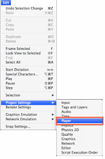
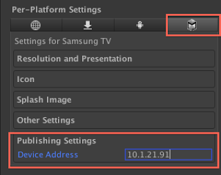

2013, 2014, 2015, or 2016 Samsung Smart TV (see Getting Started)
USB drive formatted FAT32 with enough space to store your games, inserted into TV
TV must be on same network as development computer (accessible via IP address)
Install Unity Launcher
Unity Launcher is an app that runs on your Samsung TV which allows you to install, manage and run Unity Games.
Your TV must be connected to the internet to access the Samsung App Store. The Unity Launcher application is in the Information section of the Samsung App Store. Please install this application and launch it.
2013 TVs
Turn on the TV, launch the Smart Hub by hitting the Smart TV button on the remote.
Navigate to the Apps screen. Launch the Store app.
Find Unity Launcher in the Information category, install it.
Launch Unity Launcher from the Smart TV Hub app list.
If you can’t find the application after you installed it, check More Apps.
2014 TVs
Turn on the TV, launch the Smart Hub by hitting the Smart TV button on the remote.
Navigate to the Apps screen, at the bottom you will see More Apps, click on this.
Click on Information category.
Find Unity Launcher in the list. Install it.
Launch Unity Launcher from the Smart TV Hub app list.
2015 and 2016 TVs
Turn on the TV, launch the Smart Hub by hitting the Smart TV button on the remote.
Navigate to the Apps screen.
At the top select the Information category.
Find Unity Launcher in the list. Install it.
Launch Unity Launcher from the Smart TV Hub app list.
Unity Setup
Open Unity with Samsung TV support.
In File->Build Settings, switch the Build Target to Samsung TV.
Obtain the IP address of the TV from Unity Launcher.
Insert TV’s IP addres into the PlayerSettings -> Publishing Settings -> Device Address.


Build and Run. Your project will start running on your TV.